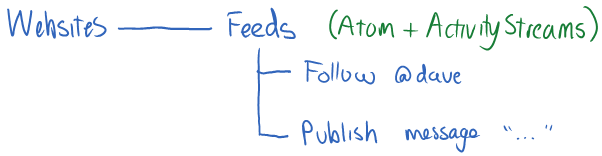

OStatus Overview

So instead of a simple Atom feed, OStatus uses an open format for social activity feeds called ActivityStreams. ActivityStreams allow us to express everything we need to follow someone's activities, however we have to repeatedly pull down the feed, which isn't realtime...